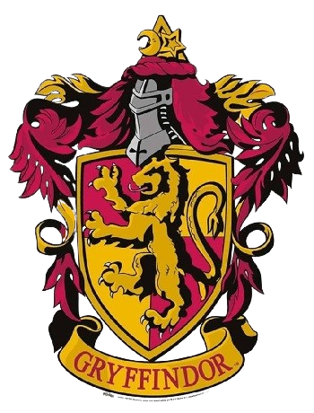

⮪ INICIO
GRYFFINDOR
La casa de gryffindor fue fundada por Godric Gryffindor. Los
colores de esta
casa son el dorado y el escarlata, y el símbolo es un león; su reliquia es
la espada de Godric
Gryffindor. El jefe de la casa es Minerva McGonagall y su fantasma
asociado es Sir.
Nicholas de Mimsy-Porpongton o también conocido como Nick Casi
Decapitado.
En esta casa solo
se aceptan a los estudiantes que tienen entre sus cualidades la valentía, la
disposición, el coraje y la caballerosidad.